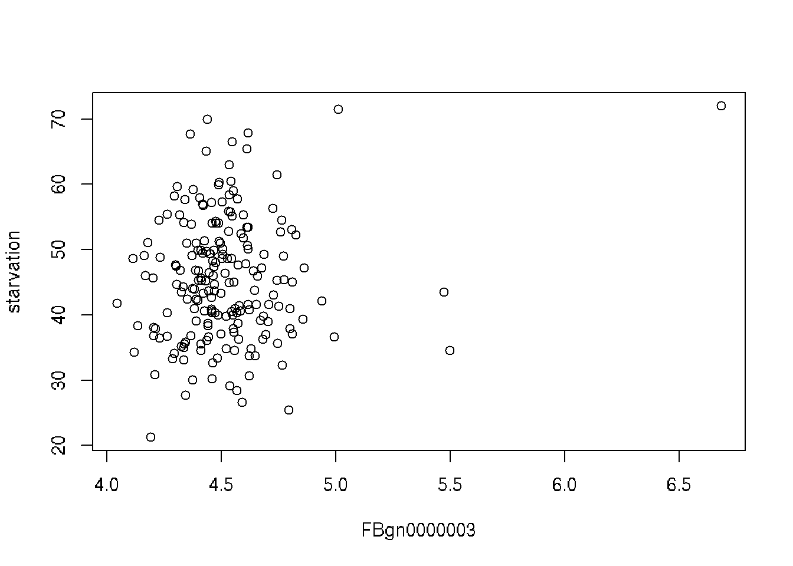
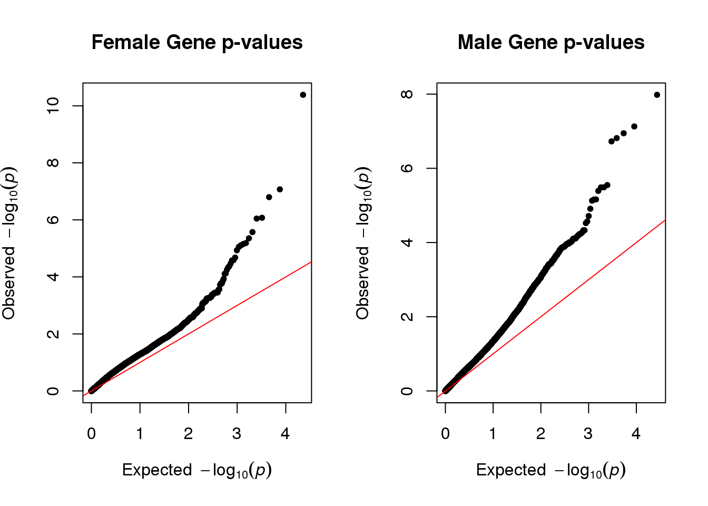
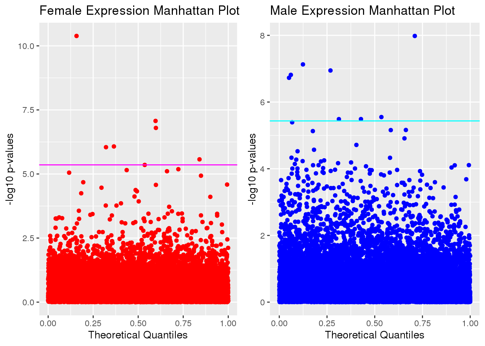

Simple Regression
Last updated: 2023-01-08
Checks: 6 1
Knit directory: dgrp-starve/
This reproducible R Markdown analysis was created with workflowr (version 1.7.0). The Checks tab describes the reproducibility checks that were applied when the results were created. The Past versions tab lists the development history.
Great! Since the R Markdown file has been committed to the Git repository, you know the exact version of the code that produced these results.
Great job! The global environment was empty. Objects defined in the global environment can affect the analysis in your R Markdown file in unknown ways. For reproduciblity it’s best to always run the code in an empty environment.
The command set.seed(20221101) was run prior to running
the code in the R Markdown file. Setting a seed ensures that any results
that rely on randomness, e.g. subsampling or permutations, are
reproducible.
Great job! Recording the operating system, R version, and package versions is critical for reproducibility.
Nice! There were no cached chunks for this analysis, so you can be confident that you successfully produced the results during this run.
Using absolute paths to the files within your workflowr project makes it difficult for you and others to run your code on a different machine. Change the absolute path(s) below to the suggested relative path(s) to make your code more reproducible.
| absolute | relative |
|---|---|
| /data/morgante_lab/nklimko/rep/dgrp-starve/data/fRegress.txt | data/fRegress.txt |
| /data/morgante_lab/nklimko/rep/dgrp-starve/data/fMeans.txt | data/fMeans.txt |
| /data/morgante_lab/nklimko/rep/dgrp-starve/data/mRegress.txt | data/mRegress.txt |
| /data/morgante_lab/nklimko/rep/dgrp-starve/data/mMeans.txt | data/mMeans.txt |
Great! You are using Git for version control. Tracking code development and connecting the code version to the results is critical for reproducibility.
The results in this page were generated with repository version 951799a. See the Past versions tab to see a history of the changes made to the R Markdown and HTML files.
Note that you need to be careful to ensure that all relevant files for
the analysis have been committed to Git prior to generating the results
(you can use wflow_publish or
wflow_git_commit). workflowr only checks the R Markdown
file, but you know if there are other scripts or data files that it
depends on. Below is the status of the Git repository when the results
were generated:
Untracked files:
Untracked: code/aaaTest
Untracked: code/analysisSR.R
Untracked: code/geneGO.R
Untracked: code/multiPrep.R
Untracked: code/regress.81916.err
Untracked: code/regress.81916.out
Untracked: code/regress.81918.err
Untracked: code/regress.81918.out
Untracked: code/regress.R
Untracked: code/regress.sbatch
Untracked: code/regressF.81919.err
Untracked: code/regressF.81919.out
Untracked: code/regressF.R
Untracked: code/regressF.sbatch
Untracked: code/snpGene.77509.err
Untracked: code/snpGene.77509.out
Untracked: code/snpGene.77515.err
Untracked: code/snpGene.77515.out
Untracked: code/snpGene.sbatch
Untracked: data/eQTL_traits_females.csv
Untracked: data/eQTL_traits_males.csv
Untracked: data/fMeans.txt
Untracked: data/fRegress.txt
Untracked: data/goGroups.txt
Untracked: data/mMeans.txt
Untracked: data/mPart.txt
Untracked: data/mRegress.txt
Untracked: data/starve-f.txt
Untracked: data/starve-m.txt
Untracked: data/xp-f.txt
Untracked: data/xp-m.txt
Untracked: figure/
Untracked: scoreAnalysisMulticomp.R
Untracked: temp.Rmd
Unstaged changes:
Deleted: analysis/database.Rmd
Modified: code/baseScript-lineComp.R
Modified: code/fourLinePrep.R
Note that any generated files, e.g. HTML, png, CSS, etc., are not included in this status report because it is ok for generated content to have uncommitted changes.
These are the previous versions of the repository in which changes were
made to the R Markdown (analysis/linReg.Rmd) and HTML
(docs/linReg.html) files. If you’ve configured a remote Git
repository (see ?wflow_git_remote), click on the hyperlinks
in the table below to view the files as they were in that past version.
| File | Version | Author | Date | Message |
|---|---|---|---|---|
| Rmd | 951799a | nklimko | 2023-01-08 | wflow_publish("analysis/*") |
| html | 3751eb8 | nklimko | 2022-12-14 | Build site. |
| Rmd | 4853114 | nklimko | 2022-12-14 | wflow_publish("analysis/*.Rmd") |
| html | e7adcbc | nklimko | 2022-12-14 | Build site. |
| Rmd | d011087 | nklimko | 2022-12-14 | wflow_publish("analysis/linReg.Rmd") |
| html | e073265 | nklimko | 2022-12-06 | Build site. |
| Rmd | 90d18bc | nklimko | 2022-12-06 | wflow_publish("analysis/linReg.Rmd") |
| html | 03fa281 | nklimko | 2022-12-06 | Build site. |
| Rmd | 0277abe | nklimko | 2022-12-06 | wflow_publish("analysis/linReg.Rmd") |
Prep
# The following was run to prepare a data table for job submission
#expression data
xpf <- fread("data/xp-f.txt")
#line/trait data
dtf <- fread("data/eQTL_traits_females.csv")
#select line and starvation only, remove nulls
dtf <- na.omit(dtf[,c(1,10)])
fwrite(dtf, "data/starve-f.txt")
fMeans <- dtf[xpf, on = .(line), nomatch=NULL, all=TRUE]
fwrite(fMeans, "data/fMeans.txt")# The following was run to prepare a data table for job submission
#expression data
xpm <- fread("data/xp-m.txt")
#line/trait data
dtm <- fread("data/eQTL_traits_males.csv")
#select line and starvation only, remove nulls
dtm <- na.omit(dtm[,c(1,11)])
fwrite(dtm, "data/starve-m.txt")
mMeans <- dtm[xpm, on = .(line), nomatch=NULL, all=TRUE]
fwrite(mMeans, "data/mMeans.txt")Demo
As a demo, I’ve walked through the process for finding a correlation for the first gene. Below is a plot of starvation vs flybase gene 3:
plot(mMeans[,c(3,2), with=FALSE])
lm() returns the simple regression of y to x, giving parameters for a slope-intercept form equation
y <- mMeans[,starvation]
x <- mMeans[,3,with=FALSE]
lm(formula=unlist(y)~unlist(x), na.action=na.omit)
Call:
lm(formula = unlist(y) ~ unlist(x), na.action = na.omit)
Coefficients:
(Intercept) unlist(x)
22.91 5.01 Plotting this line shows the effect of the particular gene(x) on starvation resistance(y).
plot(mMeans[,c(3,2), with=FALSE])
abline(22.91, 5.01)
summary() returns a variety of useful statistics regarding simple regression.
summary(lm(mMeans[,c(2,3), with=FALSE], na.action=na.omit))
Call:
lm(formula = mMeans[, c(2, 3), with = FALSE], na.action = na.omit)
Residuals:
Min 1Q Median 3Q Max
-22.6202 -6.8295 -0.4753 5.9713 24.7799
Coefficients:
Estimate Std. Error t value Pr(>|t|)
(Intercept) 22.914 11.891 1.927 0.0554 .
FBgn0000003 5.010 2.631 1.904 0.0583 .
---
Signif. codes: 0 '***' 0.001 '**' 0.01 '*' 0.05 '.' 0.1 ' ' 1
Residual standard error: 9.342 on 196 degrees of freedom
Multiple R-squared: 0.01816, Adjusted R-squared: 0.01315
F-statistic: 3.626 on 1 and 196 DF, p-value: 0.05835The p-value is what we’re interested in, and can be accessed from the summary object at [[4]][8]
The following line of code combine all of these parts into one to extract the p-value from the correlation between starvation resistance and any gene denoted by column i.
summary(lm(mMeans[,c(2,3), with=FALSE], na.action=na.omit))[[4]][8]This will need to be run over 24 thousand times to capture every gene expressed in both females and males.
Correlations
In order to save time, I used secretariat’s computational resources to perform the correlation calculations in parallel. The following two sections of code were submission scripts performed in secretariat.
library(dplyr)
library(data.table)
library(doParallel)
registerDoParallel(cores = 12)
# file path for final table
filePath <- "/data/morgante_lab/nklimko/rep/dgrp-starve/data/fRegress.txt"
# gene expression data from earlier bound to line and starvation
fMeans <- fread("/data/morgante_lab/nklimko/rep/dgrp-starve/data/fMeans.txt")
start <- 3
end <- 11340
#f 11340
#m 13577
# foreach creates a list with index indicating position in loop
# function grabs the p-value from correlation of starvation to expression of trait
pvalList <- foreach(i=start:end) %dopar% {
temp <- summary(lm(fMeans[,c(2,i), with=FALSE], na.action=na.omit))[[4]][8]
}
# converts list to vector
part <- unlist(pvalList, use.names = FALSE)
# binds p-vals to column index
id <- start:end
part <- data.table(id,pvalList)
# write table to file
fwrite(part, filePath)Both of these are available by clicking the drop down buttons on the right ->
library(dplyr)
library(data.table)
library(doParallel)
registerDoParallel(cores = 12)
# file path for final table
filePath <- "/data/morgante_lab/nklimko/rep/dgrp-starve/data/mRegress.txt"
# gene expression data from earlier bound to line and starvation
mMeans <- fread("/data/morgante_lab/nklimko/rep/dgrp-starve/data/mMeans.txt")
start <- 3
end <- 13577
# foreach creates a list with index indicating position in loop
# function grabs the p-value from correlation of starvation to expression of trait
pvalList <- foreach(i=start:end) %dopar% {
temp <- summary(lm(mMeans[,c(2,i), with=FALSE], na.action=na.omit))[[4]][8]
}
# converts list to vector
part <- unlist(pvalList, use.names = FALSE)
# binds p-vals to column index
id <- start:end
part <- data.table(id,pvalList)
#writes table to file
fwrite(part, filePath)QQ and Manthattan Data Prep ->
# Female qq prep
#f 11340
#m 13577
gg <- vector(mode='list', length=4)
#read in results from compute node
fReg <- fread("data/fRegress.txt")
#number of data points
n <- dim(fReg)[1]
#Theoretical Quantiles
uniform <- 1:n/(n+1)
#sorted p values
empirical <- sort(fReg[,pvalList])
#-log 10
logPlot <- -log10(fReg[,pvalList])
#table for qqplot
qqdata <- data.table(uniform, empirical, logPlot)
qqdataF <- qqdata
# ggplot of data to fpr, qqplot
if(FALSE){
gg[[1]] <- ggplot(qqdata, aes(x=uniform, y=empirical)) +
geom_point(color="red") +
geom_segment(aes(x=0,y=0,xend=1,yend=1)) +
xlab("Theoretical Quantiles") +
ylab("Sorted p-values") +
ggtitle("Female Expression QQ Plot")
}
gg[[2]] <- ggplot(qqdata, aes(x=uniform, y=logPlot)) +
geom_point(color="red") +
geom_hline(yintercept= -log10(0.05/n), color="magenta") +
xlab("Theoretical Quantiles") +
ylab("-log10 p-values") +
ggtitle("Female Expression Manhattan Plot")
## Code for looking at specific genes
#fMeans <- fread("data/fMeans.txt")
#genes <- colnames(fMeans)
#genes <- genes[3:length(genes)]
#fReg <- fReg[, gene:=genes]# Male qq prep
#read in results from compute node
mReg <- fread("data/mRegress.txt")
#number of data points
n <- dim(mReg)[1]
#Theoretical Quantiles
uniform <- 1:n/(n+1)
#sorted p values
empirical <- sort(mReg[,pvalList])
#-log 10
logPlot <- -log10(mReg[,pvalList])
#table for qqplot
qqdata <- data.table(uniform, empirical, logPlot)
qqdataM <- qqdata
# ggplot of data to fpr, qqplot
if(FALSE){
gg[[3]] <- ggplot(qqdata, aes(x=uniform, y=empirical)) +
geom_point(color="blue") +
geom_segment(aes(x=0,y=0,xend=1,yend=1), linewidth=1) +
xlab("Theoretical Quantiles") +
ylab("Sorted p-values") +
ggtitle("Male Expression QQ Plot")
}
gg[[4]] <- ggplot(qqdata, aes(x=uniform, y=logPlot)) +
geom_point(color="blue") +
geom_hline(yintercept= -log10(0.05/n), color="cyan") +
xlab("Theoretical Quantiles") +
ylab("-log10 p-values") +
ggtitle("Male Expression Manhattan Plot")
## Code for looking at specific genes
#mMeans <- fread("data/mMeans.txt")
#genes <- colnames(mMeans)
#genes <- genes[3:length(genes)]
#mReg <- mReg[, gene:=genes]QQ Plots
par(mfrow=c(1,2))
qq(qqdataF[,empirical], main="Female Gene p-values")
qq(qqdataM[,empirical], main="Male Gene p-values")
| Version | Author | Date |
|---|---|---|
| e7adcbc | nklimko | 2022-12-14 |
Manhattan Plots
par(mfrow=c(1,2))
plot_grid(gg[[2]],gg[[4]], ncol=2)
| Version | Author | Date |
|---|---|---|
| e7adcbc | nklimko | 2022-12-14 |
Part of the reason both plots deviate from linearity because we did not account for genes that were correlated with each other.
sessionInfo()R version 4.0.3 (2020-10-10)
Platform: x86_64-pc-linux-gnu (64-bit)
Running under: CentOS Linux 7 (Core)
Matrix products: default
BLAS/LAPACK: /opt/ohpc/pub/Software/openblas_0.3.10/lib/libopenblas_haswellp-r0.3.10.dev.so
locale:
[1] LC_CTYPE=en_US.utf-8 LC_NUMERIC=C
[3] LC_TIME=en_US.utf-8 LC_COLLATE=en_US.utf-8
[5] LC_MONETARY=en_US.utf-8 LC_MESSAGES=en_US.utf-8
[7] LC_PAPER=en_US.utf-8 LC_NAME=C
[9] LC_ADDRESS=C LC_TELEPHONE=C
[11] LC_MEASUREMENT=en_US.utf-8 LC_IDENTIFICATION=C
attached base packages:
[1] stats graphics grDevices utils datasets methods base
other attached packages:
[1] qqman_0.1.8 cowplot_1.1.1 ggplot2_3.3.5 data.table_1.14.2
[5] dplyr_1.0.8 workflowr_1.7.0
loaded via a namespace (and not attached):
[1] tidyselect_1.1.2 xfun_0.30 bslib_0.3.1 purrr_0.3.4
[5] colorspace_2.0-3 vctrs_0.4.1 generics_0.1.2 htmltools_0.5.2
[9] yaml_2.3.5 utf8_1.2.2 rlang_1.0.4 later_1.3.0
[13] pillar_1.7.0 jquerylib_0.1.4 withr_2.5.0 glue_1.6.2
[17] DBI_1.1.2 calibrate_1.7.7 lifecycle_1.0.1 stringr_1.4.0
[21] munsell_0.5.0 gtable_0.3.0 evaluate_0.15 labeling_0.4.2
[25] knitr_1.38 callr_3.7.0 fastmap_1.1.0 httpuv_1.6.5
[29] ps_1.6.0 fansi_1.0.3 highr_0.9 Rcpp_1.0.8.3
[33] promises_1.2.0.1 scales_1.2.0 jsonlite_1.8.0 farver_2.1.0
[37] fs_1.5.2 digest_0.6.29 stringi_1.7.6 processx_3.5.3
[41] getPass_0.2-2 rprojroot_2.0.3 grid_4.0.3 cli_3.3.0
[45] tools_4.0.3 magrittr_2.0.3 sass_0.4.1 tibble_3.1.6
[49] crayon_1.5.1 whisker_0.4 pkgconfig_2.0.3 MASS_7.3-56
[53] ellipsis_0.3.2 assertthat_0.2.1 rmarkdown_2.16 httr_1.4.2
[57] rstudioapi_0.13 R6_2.5.1 git2r_0.30.1 compiler_4.0.3